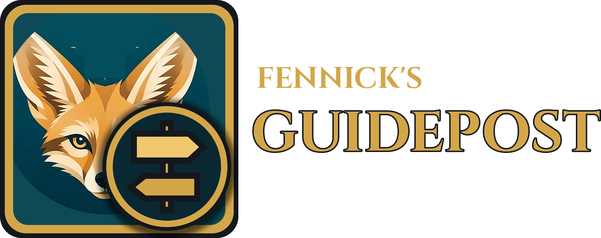
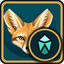
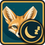

Fennick's Beast
Free add-ons for WoW Forever. One step at a time, out of your way.
Download
Get the install-all bundle (Core, Guidepost, Rest, Reputation and Merchant's Favor) or single add-ons from the releases page. Unzip into Interface/AddOns/.

Fennick's Beast Core required; the arrow, look and monster tooltip- Fennick's Guidepost stand-alone leveling routes

Rest rested XP and friendly inns- Reputation turn-ins you can do from your bags
- Merchant's Favor Forever writs and favor
Playtesters: Fox Trials is a separate tester-only download on the same page.
Changelog
Every change, newest first: CHANGELOG.md. Each release also lists its own notes.
Support Fennick
Fennick is free and always will be. Donations are optional and unlock nothing.
Bugs and help
Email fennick@fennickaddons.dev or open a bug report. Include the add-on, version, class and level, and the steps. In game, /fennick help shows the address and /fennick debuglog gives a log you can paste.